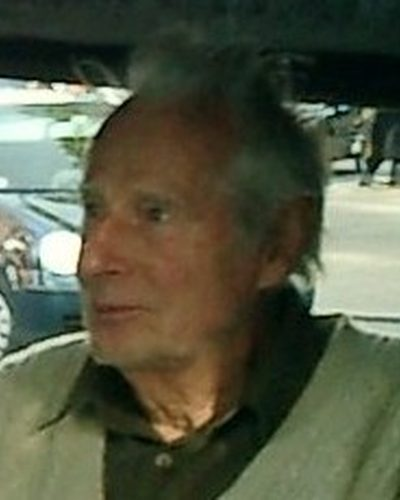

Ideologies / Green
What is Deep Ecology?
Deep Ecology is a political ideology in the Green family. Næss separated shallow environmentalism, which protects nature for human benefit, from deep ecology, which holds that every living thing has worth of its own. Humans have no right to reduce the richness of life except to meet vital needs. This implies a smaller human population and a much lighter way of living.
All life has value in itself.
Defined from: Arne Næss, with George Sessions, The Shallow and the Deep (1973) and the Deep Ecology Platform (1984)
See how close you are to Deep Ecology Dare a friend to answer as one

_(cropped).jpg){kind=link}
Where Deep Ecology stands on 13 axes
Each axis runs from 0 to 100. A score of 50 is the middle. On a classic compass it sits in the Libertarian Left quadrant.
| Axis | Position | Score | In words |
|---|---|---|---|
| EconomyMarket to Planned | 55 | Balanced | |
| OwnershipPrivate to Collective | 60 | Leans Collective | |
| RightsLiberty to Security | 30 | Strongly Liberty | |
| GovernmentDemocracy to Autocracy | 15 | Very strongly Democracy | |
| StructureDecentralised to Centralised | 15 | Very strongly Decentralised | |
| NationInternationalist to Nationalist | 15 | Very strongly Internationalist | |
| ImmigrationMulticulturalist to Assimilationist | 25 | Strongly Multiculturalist | |
| ValuesProgressive to Traditional | 40 | Leans Progressive | |
| TechnologyAccelerationist to Precautionary | 85 | Very strongly Precautionary | |
| EnvironmentIndustrialist to Environmentalist | 100 | Very strongly Environmentalist | |
| ReligionSecular to Religious | 40 | Leans Secular | |
| MilitaryPacifist to Militarist | 5 | Very strongly Pacifist | |
| TradeFree Trade to Protectionist | 80 | Strongly Protectionist |
Ideologies closest to Deep Ecology
- Degrowth88% alike
- Bioregionalism87% alike
- Neo Luddism84% alike
- Anarcho Primitivism79% alike
- Conservationism (Land Ethic)78% alike
Its opposite on this map is Juche, at 19%.
Parties near Deep Ecology
- Green Party of the United StatesUnited States. Platform of the Green Party of the United States (2024)84% alike
- Values PartyNew Zealand. Blueprint for New Zealand (1972)83% alike
- Green Party of England and WalesUnited Kingdom. Real Hope. Real Change. (2024)81% alike
- Historic PactColombia. Tres revoluciones (2026)79% alike
Common questions
What is Deep Ecology?
Deep Ecology is a political ideology in the Green family. Næss separated shallow environmentalism, which protects nature for human benefit, from deep ecology, which holds that every living thing has worth of its own. Humans have no right to reduce the richness of life except to meet vital needs. This implies a smaller human population and a much lighter way of living.
What does Deep Ecology believe?
In one line: All life has value in itself. Its strongest positions are Environmentalist, Pacifist, Democracy. Næss separated shallow environmentalism, which protects nature for human benefit, from deep ecology, which holds that every living thing has worth of its own. Humans have no right to reduce the richness of life except to meet vital needs. This implies a smaller human population and a much lighter way of living.
Who founded Deep Ecology?
Deep Ecology is defined here from The Shallow and the Deep (1973) and the Deep Ecology Platform (1984) by Arne Næss, with George Sessions. The thinker most tied to it is Arne Næss (1912 to 2009).
Is Deep Ecology left wing or right wing?
On a classic two axis compass Deep Ecology falls in the Libertarian Left quadrant, which means the economic centre and the libertarian side. Left and right hide a lot, though, which is why EthosScales scores it on thirteen separate axes.
How is Deep Ecology different from Degrowth?
They are close: 88% alike. The biggest gaps are on Religion, where Deep Ecology scores 40 and Degrowth scores 10, and Environment, where Deep Ecology scores 100 and Degrowth scores 85. On each axis, 0 is one end and 100 is the other.
Think this is wrong? Suggest a correction. The scores are editorial estimates.